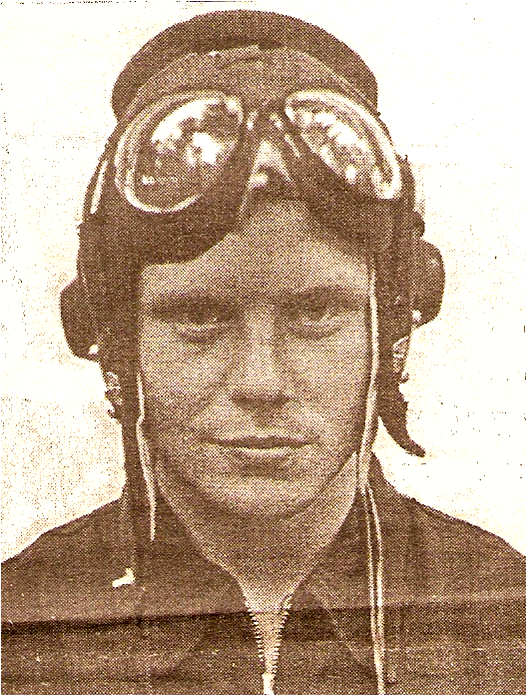

Логиновский Владимир Аркадьевич
(29.02.1960)
Родился 29 февраля 1960 года в деревне Бакшеев Дор Нижнеентальского сельсовета Кичменгско-Городецкого района.
В 1967 году семья переехала в поселок Новатор Великоустюгского района. В 1977 году поступил в Качинское высшее военное авиационное училище летчиков, которое окончил с отличием в 1982 году. Затем служба в военной летной части, где несколько лет набирался летного опыта на серийных военных самолетах «Су» и «Миг». В 1989 году прошел обучение в школе летчиков-испытателей, после чего попал в Летно-исследовательский институт им. М.М. Громова. Стал испытывать новые виды самолетов, а их было не один десяток разных типов и моделей.
Участвовал в отработке дозаправки самолетов-истребителей, в выполнении сверхдальних перелетов на СУ-30, а также в проведении ряда других испытательных работ на самолетах-истребителях по тематике института. Он входит в элитную группу летчиков, которым доверено право первым осваивать сверхсовременные образцы летательной техники.
В.А. Логиновский - участник более тридцати авиасалонов, проходивших в странах Ближнего Востока, Китае, Таиланде, Франции, Англии, Америке, престижных авиавыставок.
15 января 1998 года был подписан Указ Президента о присвоении летчику-испытателю 1 класса Владимиру Логиновскому звания Герой России с официальной формулировкой: «За мужество и героизм, проявленные при испытании новой авиационной техники». Золотую Звезду Героя вручал в Кремле лично Президент Б. Ельцин 6 мая 1998 года. В настоящее время проживает в Подмосковье. Его имя занесено на Доску Славы в городе Жуковском.
В 1967 году семья переехала в поселок Новатор Великоустюгского района. В 1977 году поступил в Качинское высшее военное авиационное училище летчиков, которое окончил с отличием в 1982 году. Затем служба в военной летной части, где несколько лет набирался летного опыта на серийных военных самолетах «Су» и «Миг». В 1989 году прошел обучение в школе летчиков-испытателей, после чего попал в Летно-исследовательский институт им. М.М. Громова. Стал испытывать новые виды самолетов, а их было не один десяток разных типов и моделей.
Участвовал в отработке дозаправки самолетов-истребителей, в выполнении сверхдальних перелетов на СУ-30, а также в проведении ряда других испытательных работ на самолетах-истребителях по тематике института. Он входит в элитную группу летчиков, которым доверено право первым осваивать сверхсовременные образцы летательной техники.
В.А. Логиновский - участник более тридцати авиасалонов, проходивших в странах Ближнего Востока, Китае, Таиланде, Франции, Англии, Америке, престижных авиавыставок.
15 января 1998 года был подписан Указ Президента о присвоении летчику-испытателю 1 класса Владимиру Логиновскому звания Герой России с официальной формулировкой: «За мужество и героизм, проявленные при испытании новой авиационной техники». Золотую Звезду Героя вручал в Кремле лично Президент Б. Ельцин 6 мая 1998 года. В настоящее время проживает в Подмосковье. Его имя занесено на Доску Славы в городе Жуковском.